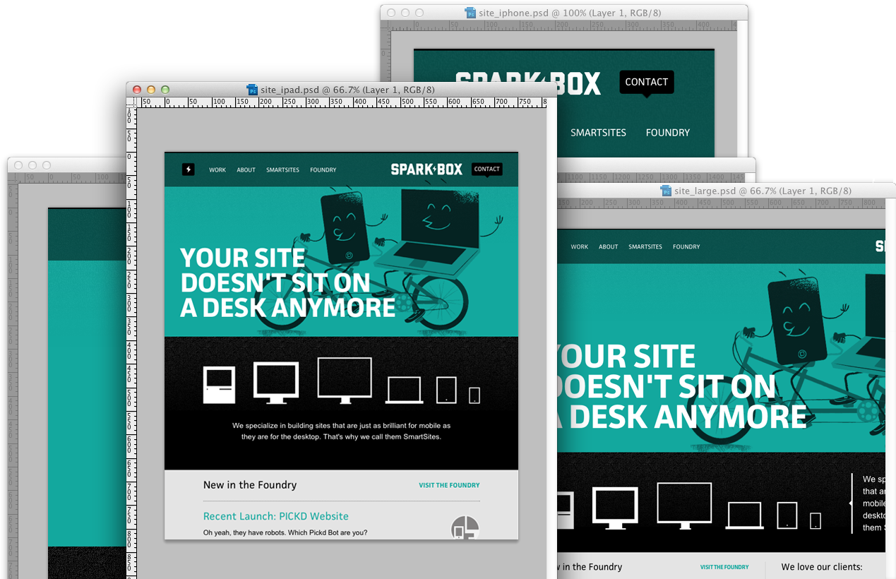
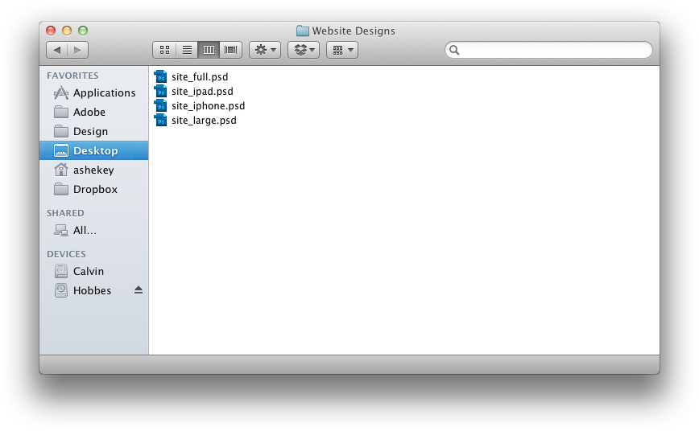
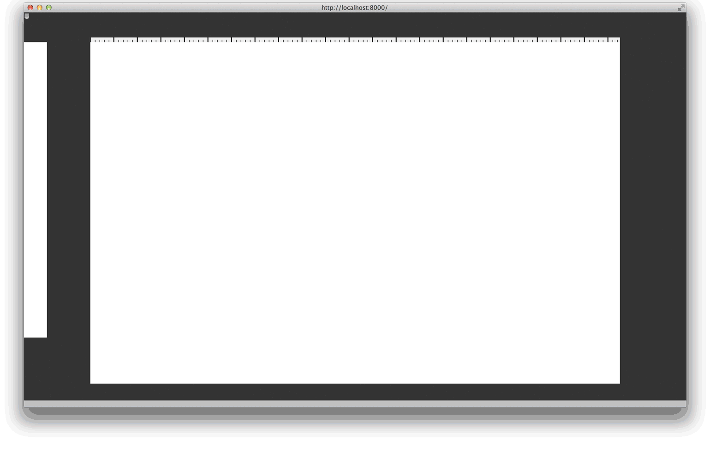
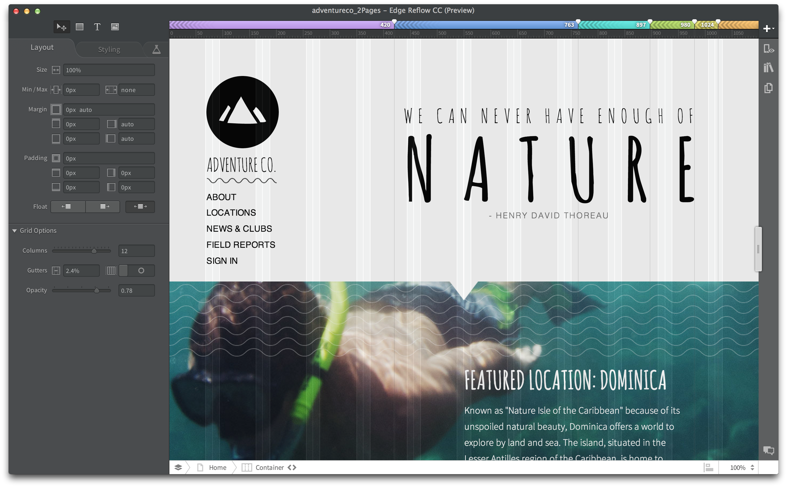

Building Reflow
Who's this bozo?
What is this Reflow you speak of?
The problem


Express Responsive Intent
How did you do it?
With Backbone of course
The truth is we iterated...
A whole lot
Why use a framework at all?
On Boarding
Pink Wheel Syndrome
it's not better just because you made it
Prototype
like you mean it
You prototype the things you don't think are possible
Modularity
A lesson in refactoring
Multiple Inheritance
Angus Croll is amazeballs
Views
I wish we had used Backbone.LayoutManager
Templates
Never needed more than _.template
Collections
jQuery Plugins
Testing
You simply cannot make quality software without TDD



Reflow Demo
Fail Harder!
Kristofer Joseph
@dam
@dam
Links
- Reflow: http://html.adobe.com/edge/reflow/
- Brackets: http://brackets.io/
- Topcoat: http://topcoat.io/
- Pseudo Code: https://gist.github.com/kristoferjoseph
- Functional Mixins: http://javascriptweblog.wordpress.com/2011/05/31/a-fresh-look-at-javascript-mixins/
- Squire: https://github.com/iammerrick/Squire.js/
- Sinon: http://sinonjs.org/
- Sonar: http://www.sonarqube.org/
/
#